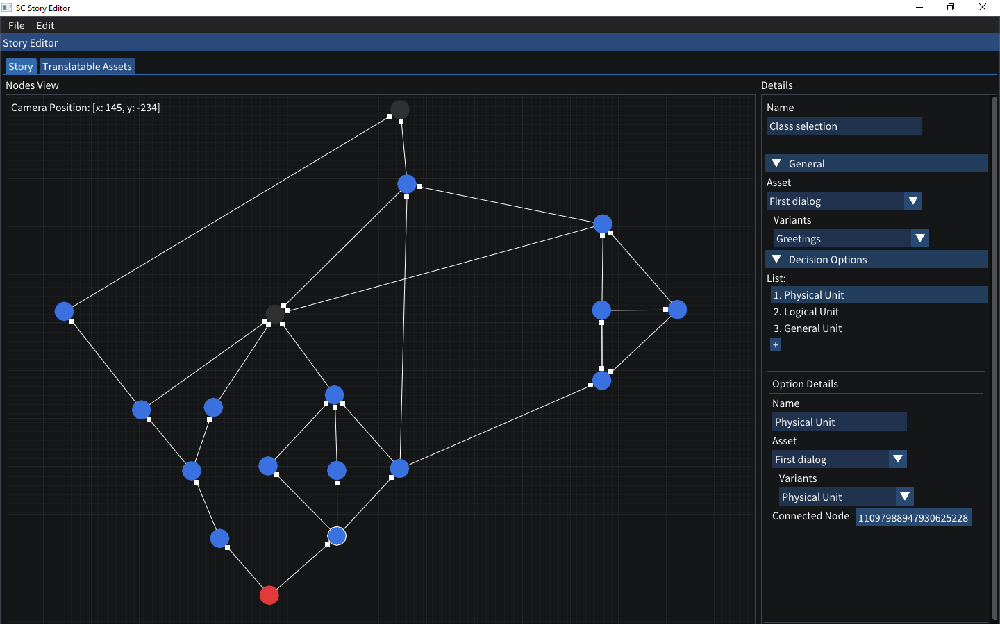
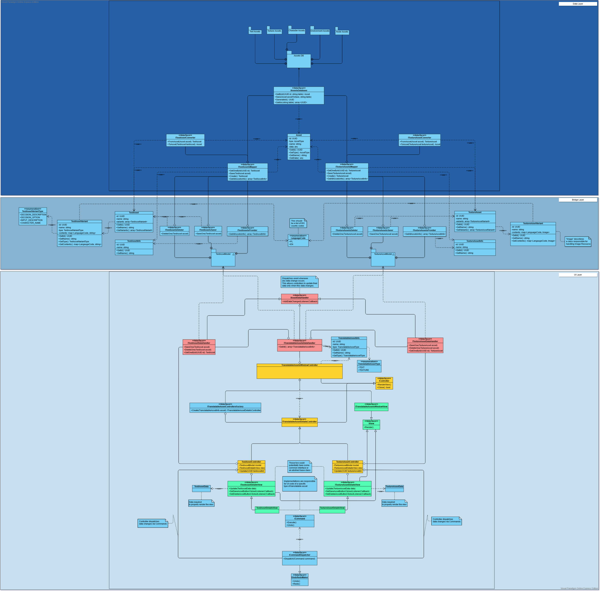

Node Based Editor
DECEMBER 2020 - PRESENT

Project Description
 In November 2020, my team and I finished working on a turn based strategy game prototype, and we wanted to test our other ideas.
We started working on a graphic novel game. We wanted to have a tool that would allow us creating
content for our game, but also something that would allow players to create their own stories and alter existing ones.
That's how we started working on the node based editor - our game's Story Editor.
In cooperation with game designer, I created a list of requirements which then turned into a design
document containing all aspects of the editor. The project is still in progress, so not all of the features are implemented yet.
In November 2020, my team and I finished working on a turn based strategy game prototype, and we wanted to test our other ideas.
We started working on a graphic novel game. We wanted to have a tool that would allow us creating
content for our game, but also something that would allow players to create their own stories and alter existing ones.
That's how we started working on the node based editor - our game's Story Editor.
In cooperation with game designer, I created a list of requirements which then turned into a design
document containing all aspects of the editor. The project is still in progress, so not all of the features are implemented yet.
The editor's data is based on assets. Each element of the story, such as character or a dialog option, is an asset of its own type. All assets are stored on the drive in the `YAML` format providing relatively easy sharing via version control system, such as Git. Additionally, the editor allows creating multiple translations for texts and images. Assets reference each other by IDs, and actual version of the translatable asset can be loaded based on the selected language. The core of the editor is the simple nodes system which allows combining all elements together to create a story for the game.
Story Editor is created with C++17 and Dear ImGui for UI. I also use other libraries such as xxHash, stduuid or yaml-cpp. I am also using GoogleTest as a testing framework.
Architecture
The editor is split into three layers: Data, Bridge and UI
The Data layer is the 'Brain' of the editor. It contains the assets database which stores all the
assets on disk, and contains methods to convert YAML into C++ objects.
I wanted to be able to replace the Data layer in the future (for example, with a server-based
solution), so it only exposes the C API for exchanging data.
Creating the C API was a difficult task, because I hadn't created such API before, and there is a lot to
keep in mind when dealing with DLL-boundaries.
I implemented the API by using entry functions which initialize pointers to interfaces, and then
exchanging data via those interfaces.
You can find an example in the code samples below.
The Bridge layer is a connector between Data and UI layers. It converts C and C++ objects
back and forth, giving the UI layer possibility to deal only with C++ objects.
And last but not least, the UI layer is responsible for displaying the user interface. It takes data via
Bridge layer and displays it using the Dear ImGui library.
Below, you can find an image showing the general architecture.

Code Examples
Below, you can find a few example of the project's code. The entire source code is not currently publicly available, so I am including only a couple of examples.
Here, you can find an example of C API functions used to initialize the Data Layer API.
Their declarations are placed inside the Api.h header, used by the API user.
The actual implementation of these functions is placed inside the Api.cpp file.
Once initialized, the IApi interface provides access to other interfaces, such as IProjectProvider and IProject.
Those interfaces are used to create/open project, and to operate on project's data (assets, nodes, etc.).
Functions Declarations
Functions Definitions
IApi interface implementation used by InitializeApi() function
This section contains the main components responsible for rendering nodes.
The rendering process starts with NodesViewWindowController class responsible for handling logic of the Nodes View.
It updates camera, handles user input and uses renderers to render grid and nodes.
Next, the NodesRenderer class, implementing the INodesRenderer interface, handles rendering of nodes and their transitions.
It uses provided camera and EditorNodeAssets to render only visible nodes. It uses the INodeRenderer interface to issue draw calls for each node and its transitions.
Returns list of nodes which are actually visible on the screen, so that the NodesViewWindowController can handle events of only the visible nodes.
And last but not least, there is the ImGuiNodeRenderer class, implementing the INodeRenderer interface which uses DearImGui to render single node onto the screen.